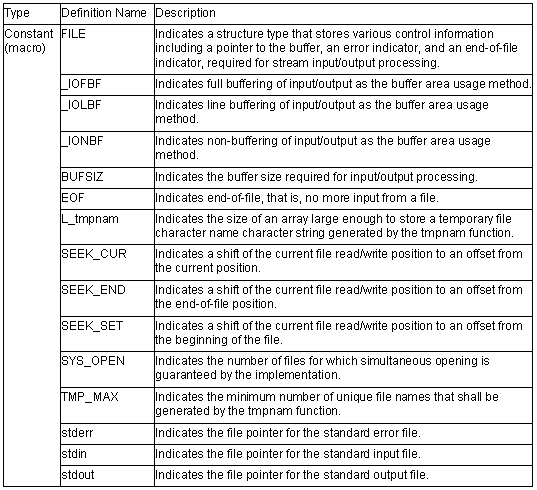
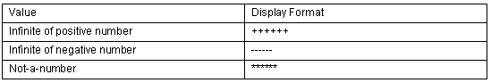
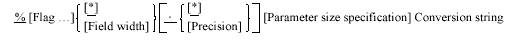
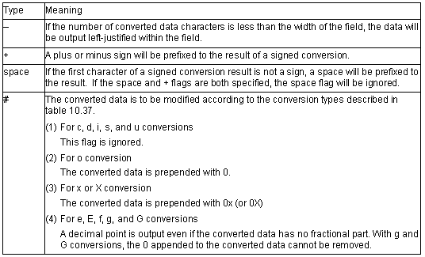
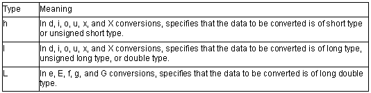
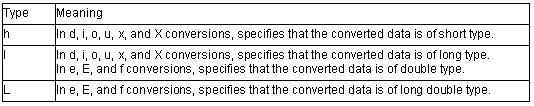
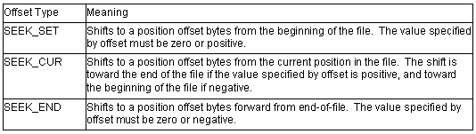

<stdio.h>
Performs processing relating to file input/output for stream input/output.
The following macros are all implementation-defined.

(a) The output format of perror function is <character string>:<error message for the error number specified in error>
(b) Table shows the format when displaying the infinite of floating points and not-a-number in printf and fprintf functions.
Table Display Format of Infinite and Not-a-Number

An example of a program that performs a series of input/output processing operations for a stream input/output file is shown in the following.
Example
1 #include <stdio.h>
2
3 void main( )
4 {
5 int c;
6 FILE *ifp, *ofp;
7
8 if ((ifp=fopen("INPUT.DAT","r"))==NULL){
9 fprintf(stderr,"cannot open input file\n");
10 exit(1);
11 }
12 if ((ofp=fopen("OUTPUT.DAT","w"))==NULL){
13 fprintf(stderr,"cannot open output file\n");
14 exit(1);
15 }
16 while ((c=getc(ifp))!=EOF)
17 putc(c, ofp);
18 fclose(ifp);
19 fclose(ofp);
20 }
Explanation
This program copies the contents of file INPUT.DAT to file OUTPUT.DAT.
Input file INPUT.DAT is opened by the fopen function in line 8, and output file OUTPUT.DAT is opened by the fopen function in line 12. If opening fails, NULL is returned as the return value of the fopen function, an error message is output, and the program is terminated.
If the fopen function ends normally, pointers to the data (FILE type) that stores information on the opened files is returned; these are set in variables ifp and ofp.
After successful opening, input/output is performed using these FILE type data items.
When file processing ends, the files are closed with the fclose function.
int fclose(FILE *fp)
Description: Closes a stream input/output file.
Header file: <stdio.h>
Return values: Normal: 0
Abnormal: Nonzero
Parameters: fp File pointer
Example: #include <stdio.h>
FILE *fp;
int ret;
ret=fclose(fp);
Remarks: The fclose function closes the stream input/output file indicated by file pointer fp.
If the output file of the stream input/output file is open and data that is not output remains in the buffer, that data is output to the file before it is closed.
If the input/output buffer was automatically allocated by the system, it iscancelled.
int fflush(FILE *fp)
Description: Outputs stream input/output file buffer contents to the file.
Header file: <stdio.h>
Return values: Normal: 0
Abnormal: Nonzero
Parameters: fp File pointer
Example: #include <stdio.h>
FILE *fp;
int ret;
ret=fflush(fp);
Remarks: When an output file of the stream input/output file is open, the fflush function outputs the contents of the buffer that is not output for the stream input/output file specified by file pointer fp to the file. If an input file is open, the ungetc function specification is invalid.
FILE *fopen(constant char *fname, const char *mode)
Description: Opens a stream input/output file under the specified file name.
Header file: <stdio.h>
Return values: Normal: File pointer indicating file information on opened file
Abnormal: NULL
Parameters: fname Pointer to string indicating file namemode Pointer to string indicating file access mode
Example: #include <stdio.h>
FILE *ret;
const char *fname, *mode;
ret=fopen(fname, mode);
Remarks: The fopen function opens the stream input/output file whose file name is the string pointed to by fname. If a file that does not exist is opened in write mode or addition mode, a new file is created wherever possible. When an existing file is opened in write mode, writing processing is performed from the beginning of the file, and previously written file contents are erased.
When a file is opened in addition mode, write processing is performed from the end-of-file position. When a file is opened in update mode, both input and output processing can be performed on the file. However, input cannot directly follow output without intervening execution of the fflush, fseek, or rewind function. Similarly, output cannot directly follow input without intervening execution of the fflush, fseek, or rewind function.
A string indicating the opening method may be added after the string indicating the file access mode.
FILE *freopen(constant char *fname, const char *mode, FILE *fp)
Description: Closes a currently open stream input/output file and reopens a new file under
the specified file name.
Header file: <stdio.h>
Return values: Normal: fp
Abnormal: NULL
Parameters: fname Pointer to string indicating new file namemode Pointer to string indicating file access modefp File pointer of currently open stream input/output file
Example: #include <stdio.h>
const char *fname, *mode;
FILE *ret, *fp;
ret=freopen(fname, mode, fp);
Remarks: The freopen function first closes the stream input/output file indicated by file pointer fp (the following processing is carried out even if this close processing is unsuccessful). Next, the freopen function opens the file indicated by file name fname for stream input/output, reusing the FILE structure pointed to by fp.
The freopen function is useful when there is a limit on the number of files being opened at one time.
The freopen function normally returns the same value as fp, but returns a null pointer if an error occurs.
void setbuf (FILE *fp, char buf[BUFSIZ])
Description: Defines and sets a stream input/output buffer area by the user program.
Header file: <stdio.h>
Parameters: fp File pointerbuf Pointer to buffer area
Example: #include <stdio.h>FILE *fp;
char buf[BUFSIZ];
setbuf(fp, buf);
Remarks: The setbuf function defines the storage area pointed to by buf so that it can be used as an input/output buffer area for the stream input/output file indicated by file pointer fp. As a result, input/output processing is performed using a buffer area of size BUFSIZ.
int setvbuf(FILE *fp, char *buf, int type, size_t size)
Description: Defines and sets a stream input/output buffer area by the user program.
Header file: <stdio.h>
Return values: Normal: 0Abnormal: Nonzero
Parameters: fp File pointerbuf Pointer to buffer areatype Buffer management methodsize Size of buffer area
Example: #include <stdio.h>
FILE *fp;
char *buf;
int type, ret;
size_t size;
ret=setvbuf(fp, buf, type, size);
Remarks: The setvbuf function defines the storage area pointed to by buf so that it can be used as an input/output buffer area for the stream input/output file indicated by file pointer fp.
There are three ways of using this buffer area, as follows:
The buffer area must not be released before the opened stream input/output file is closed. Also, the setvbuf function must be used between opening of the stream input/output file and execution of input/output processing,
int fprintf(FILE *fp, const char *control[, arg…])
Description: Outputs data to a stream input/output file according to the format.
Header file: <stdio.h>
Return values: Normal: Number of characters converted and output
Abnormal: Negative value
Parameters: fp File pointercontrol Pointer to string indicating formatarg,…List of data to be output according to format
Example: #include <stdio.h>
FILE *fp;
const char *control="%s";
int ret;char buffer[]="Hellow World\n";
ret=fprintf(fp, control, buffer);
Remarks: The fprintf function converts and edits argument arg according to the string that indicates the format pointed to by control, and outputs the result to the stream input/output file indicated by file pointer fp.
The fprintf function returns the number of data items converted and output, or a negative value if an error occurs.
The format specifications are shown below.
(1) Overview of formats
The character string that represents the format is made up of two kinds of string.
(a) Ordinary characters
A character other than a specification beginning with % shown in (b) is output unchanged.
(b) Conversion specifications
A conversion specifications is a string beginning with % that specifies the conversion method for the following argument. The conversion specifications format conforms to the following rules:

If there is no parameter to be actually output for this conversion specifications, the behavior is not guaranteed. Also, if the number of parameters to be actually output is greater than the conversion specifications, the excess parameters are ignored.
(2) Description of conversion specifications
(a) Flags
Flags specify modifications to the data to be output, such as addition of a sign. The types of flag that can be specified, and their meanings, are shown in table .
Table Flag Types and Their Meanings

(b) Field width
The number of characters in the converted data to be output is specified as any decimal number.
If the number of converted data characters is less than the width of the field, the data is prefixed with spaces up to the width of the field. (However, if '-' is specified as a flag, spaces are appended to the data.)
If the number of converted data characters exceeds the width of the field, the width of the field is extended to allow the converted result to be output.
If the field width specification begins with 0, 0 characters, not spaces, are prefixed to the output data.
(c) Precision
The precision of the converted data is specified according to the type of conversion, as described in table .
The precision is specified in the form of a period (.) followed by a decimal integer. If the decimal integer is omitted, 0 is assumed to be specified.
If the specified precision is incompatible with the field width specification, the field width specification is ignored.
The precision specification has the following meanings according to the conversion type.
(i) For d, i, o, u, x, and X conversionsThe minimum number of digits in the converted data is specified.
(ii) For e, E, and f conversions
The number of digits after the decimal point in the converted data is specified.
(iii) For g and G conversionsThe maximum number of significant digits in the converted data is specified.
(iv) For s conversionThe maximum number of printed digits is specified.
(d) Parameter size specification
For d, i, o, u, x, X, e, E, f, g, and G conversions (see table ), specifies the size (short type, long type, or long double type) of the data to be converted. In other conversions, this specification is ignored. Table shows the types of size specification and their meanings.
Table Parameter Size Specification Types and Meanings

(e) Conversion specifier
Specifies the format into which the conversion data is to be converted.
If the data to be converted is union or array type, or is a pointer indicating those types, the behavior is not guaranteed except when a character array is converted by s conversion or when a pointer is converted by p conversion. Table 10.37 shows the conversion specifiers and conversion methods. If a letter not shown in this table is specified as the conversion specifier, the behavior is not guaranteed. The behavior if another character is specified depends on the compiler.
Table Conversion Specifiers and Conversion Methods
(f) * specification for field width or precision
* can be specified as the field width or precision specification value.
In this case, the value of the parameter corresponding to the conversion specification is used as the field width or precision specification value. If this parameter has a negative field width, flag '–' is interpreted as being specified for the positive field width.
If the parameter has a negative precision, the precision is interpreted as being omitted.
int fscanf(FILE *fp, const char *control[, ptr]…)
Description: Inputs data from a stream input/output file and converts it according to a format.
Header file: <stdio.h>
Return values: Normal: Number of data items successfully input and converted
Abnormal: If input data ends before input data conversion is performed: EOF
Parameters: fp File pointercontrol Pointer to string indicating formatptr Pointer to storage area that holds input data
Example: #include <stdio.h>
FILE *fp;
const char *control=%d;
int ret,buffer[10];
ret=fscanf(fp, control, buffer);
Remarks: The fscanf function inputs data from the stream input/output file indicated by file pointer fp, converts and edits it according to the string indicating the format pointed to by control, and stores the result in the storage area pointed to by ptr.
The format specifications for inputting data are shown below.
Overview of formatsThe string that represents the format is made up of the following three kinds of string.
Space charactersIf a space (' '), horizontal tab ('\t'), or new-line character ('\n') is specified, processing is performed to skip to the next non-space character in the input data.
Ordinary charactersIf a character that is neither one of the space characters listed in (a) nor % is specified, one input data character is input. The input character must match a character specified in the string that represents the format.
Conversion specificationA conversion specification is a string beginning with % that specifies the method of converting the input data and storing it in the area pointed to by the following argument. The conversion specification format conforms to the following rules:
% [*] [Field width] [Converted data size] Conversion string
If there is no pointer to the storage area that holds input data for the conversion specification in the format, the behavior is not guaranteed. Also, if a pointer to a storage area that holds input data remains when the format is exhausted, that pointer is ignored.
(2) Description of conversion specifications(a) * specification
Suppresses storage of the input data in the storage area pointed to by the parameter.
For d, i, o, u, x, X, e, E, and f conversions (see table ), specifies
the size (short type, long type, or long double type) of the converted data.
In other conversions, this specification is ignored.
Table shows the types of size specification and their meanings.
Table Converted Data Size Specification Types and Meanings

The input data is converted according to the type of conversion specified by the conversion specifier. However, processing is terminated if a space character is read, if a character for which conversion is not permitted is read, or if the specified field width is exceeded.
Table Conversion Specifiers and Conversion Methods
If there is no pointer to the storage area that holds input data for the If the conversion specifier is a letter not shown in table , the behavior is not guaranteed. For other characters, the behavior is implementation-defined.
int printf(const char *control[, arg…])
Description: Converts data according to a format and outputs it to the standard output file (stdout).
Header file: <stdio.h>
Return values: Normal: Number of characters converted and output
Abnormal: Negative value
Parameters: control Pointer to string indicating formatarg... Data to be output according to format
Example: #include <stdio.h>
char *s;
const char *control="%s";
int ret;
char buffer[]="Hellow World\n";
ret=printf(s,control buffer);
Remarks: The printf function converts and edits parameter arg according to the string that indicates the format pointed to by control, and outputs the result to the standard output file (stdout).
For details of the format specifications, see the description of the fprintf() function.
int scanf(const char *control[, ptr…])
Description: Inputs data from the standard input file (stdin) and converts it according to a format.
Header file: <stdio.h>
Return values: Normal: Number of data items successfully input and converted
Abnormal: EOF
Parameters: control Pointer to string indicating formatptr... Pointer to storage area that holds input and converted data
Example: #include <stdio.h>const char *control="%d";
int ret,buffer[10];
ret=scanf(control,buffer);
Remarks: The scanf function inputs data from the standard input file (stdin), converts and edits it according to the string indicating the format pointed to by control, and stores the result in the storage area pointed to by ptr.
The scanf function returns the number of data items successfully input and converted as the return value. EOF is returned if the standard input file ends before the first conversion.
For details of the format specifications, see the description of the
fscanf() function.
In %e conversion, specify l for double type, and specify L for long double type. The default type is float.
int sprintf(char*s, const char *control[, arg…])
Description: Converts data according to a format and outputs it to the specified area.
Header file: <stdio.h>
Return values: Number of characters converted
Parameters: s Pointer to storage area to which data is to be outputcontrol Pointer to string indicating formatarg... Data to be output according to format
Example: #include <stdio.h>char *s;
const char *control"=%s";
int ret;
char buffer[]="Hellow World\n";
ret=sprintf(s, control, buffer);
Remarks: The sprintf function converts and edits parameter arg according to the string that indicates the format pointed to by control, and outputs the result to the storage area pointed to by s.
A null character is appended at the end of the converted and output string. This null character is not included in the return value (number of characters output).
For details of the format specifications, see the description of the fprintf() function.
int sscanf(const char*s, const char *control[, ptr…])
Description: Inputs data from the specified storage area and converts it according to a
format.
Header file: <stdio.h>
Return values: Normal: Number of data items successfully input and converted
Abnormal: EOF
Parameters: s Storage area containing data to be inputcontrol Pointer to string indicating formatptr... Pointer to storage area that holds input and converted data
Example: #include <stdio.h>const char *s, *control="%d";
int ret,buffer[10];
ret=sscanf(s, control, buffer);
Remarks: The sscanf function inputs data from the storage area pointed to by s, converts and edits it according to the string indicating the format pointed to by control, and stores the result in the storage area pointed to by ptr.
The sscanf function returns the number of data items successfully input and converted. EOF is returned if the input data ends before the first conversion.
For details of the format specifications, see the description of the fscanf() function.
int vfprintf(FILE *fp, const char *control, va_list arg)
Description: Outputs a variable parameter list to the specified stream input/output file according to a format.
Header file: <stdio.h>
Return values: Normal: Number of characters converted and output
Abnormal: Negative value
Parameters: fp File pointercontrol Pointer to string indicating formatarg Argument list
Example: #include <stdarg.h>#include <stdio.h>const char *control="%d";int ret;void prlist(int count ,...)
{ va_list ap;
int i; va_start(ap, count);
for(i=0;i<count;i++)
ret=vfprintf(fp, control, ap);
va_end(ap)}
Remarks: The vfprintf function sequentially converts and edits a variable parameter list according to the string that indicates the format pointed to by control, and outputs the result to the stream input/output file indicated by fp.
The vfprintf function returns the number of data items converted and output, or a negative value if an error occurs.
With the vfprintf function, the va_end macro is not invoked.
For details of the format specifications, see the description of the fprintf() function.
Parameter arg, indicating the argument list, must be initialized by the va_start and va_arg macros beforehand.
int vprintf(const char *control, va_list arg)
Description: Outputs a variable parameter list to the standard output file (stdout) according
to a format.
Header file: <stdio.h>
Return values: Normal: Number of characters converted and output
Abnormal: Negative value
Parameters: control Pointer to string indicating formatarg Argument list
Example: #include <stdarg.h>#include <stdio.h>
FILE *fp;const char *control="%d";
int ret;void prlist(int count ,...)
{
va_list ap; int i;
va_start(ap, count);
for(i=o;i<count;i++)
ret=vprintf(control, arg); va_end(ap);
}
Remarks: The vprintf function sequentially converts and edits a variable parameter list according to the string that indicates the format pointed to by control, and outputs the result to the standard output file.
The vprintf function returns the number of data items converted and output, or a negative value if an error occurs.
With the vprintf function, the va_end macro is not invoked.
For details of the format specifications, see the description of the fprintf() function.
Parameter arg, indicating the argument list, must be initialized by the va_start and va_arg macros beforehand.
int vsprintf(char *s, const char *control, va_list arg)
Description: Outputs a variable parameter list to the specified storage area according to a format.
Header file: <stdio.h>
Return values: Normal: Number of characters converted
Abnormal: Negative value
Parameters: s Pointer to storage area to which data is to be outputcontrol Pointer to string indicating formatarg Argument list
Example: #include <stdarg.h>#include <stdio.h>char *s;
const char *control="%d";
int ret;void prlist(int count ,...)
{
va_list ap;
int i;
va_start(ap, count);
for(i=0;i<count;i++) ret=vsprintf(s, control, ap); va_end(ap);
}
Remarks: The vsprintf function sequentially converts and edits a variable parameter list according to the string that indicates the format pointed to by control, and outputs the result to the storage area pointed to by s.
A null character is appended at the end of the converted and output string. This null character is not included in the return value (number of characters output).
For details of the format specifications, see the description of the fprintf() function.
Parameter arg, indicating the argument list, must be initialized by the va_start and va_arg macros beforehand.
int fgetc(FILE *fp)
Description: Inputs one character from a stream input/output file.
Header file: <stdio.h>
Return values: Normal: End-of-file: EOFOtherwise: Input character
Abnormal: EOF
Parameters: fp File pointer
Example: #include <stdio.h>
FILE *fp;
int ret;
ret=fgetc(fp);
Error conditions:
If a read error occurs, the error indicator for that file is set.
Remarks: The fgetc function inputs one character from the stream input/output file indicated by file pointer fp.
The fgetc function normally returns the input character, but returns EOF at end-of-file or if an error occurs. At end-of-file, the end-of-file indicator for that file is set.
char *fgets(char *s, int n, FIEL *fp)
Description: Inputs a string from a stream input/output file.
Header file: <stdio.h>
Return values: Normal: End-of-file: NULL
Otherwise: sAbnormal: NULL
Parameters: s Pointer to storage area to which string is inputn Number of bytes of storage area to which string is inputfp File pointer
Example: #include <stdio.h>char *s, *ret;
int n;
FILE *fp;
ret=fgets(s, n, fp);
Remarks: The fgets function inputs a string from the stream input/output file indicated by file pointer fp to the storage area pointed to by s.
The fgets function performs input up to the (n–1)th character or a new-line character, or until end-of-file, and appends a null character at the end of the input string.
The fgets function normally returns s, the pointer to the storage area to which the string is input, but returns a null pointer at end-of-file or if an error occurs.
The contents of the storage area pointed to by s do not change at end-of-file, but are undefined if an error occurs.
int fputc (int c, FILE *fp)
Description: Outputs one character to a stream input/output file.
Header file: <stdio.h>
Return values: Normal: Output character
Abnormal: EOF
Parameters: c Character to be outputfp File pointer
Example: #include <stdio.h>
FILE *fp;
int c, ret;
ret=fputc(c, fp);
Error conditions:
If a write error occurs, the error indicator for that file is set.
Remarks: The fputc function outputs character c to the stream input/output file indicated by file pointer fp.
The fputc function normally returns c, the output character, but returns EOF if an error occurs.
int fputs (const char *s, FILE *fp)
Description: Outputs a string to a stream input/output file.
Header file: <stdio.h>
Return values: Normal: 0
Abnormal: Nonzero
Parameters: s Pointer to string to be outputfp File pointer
Example: #include <stdio.h>const char *s;
int ret;
FILE *fp;
ret=fputs(s, fp);
Remarks: The fputs function outputs the string up to the character preceding the null character pointed to by s to the stream input/output file indicated by file pointer fp. The null character indicating the end of the string is not output.
The fputs function normally returns zero, but returns nonzero if an error occurs.
int getc (FILE *fp)
Description: Inputs one character from a stream input/output file.
Header file: <stdio.h>
Return values: Normal: End-of-file: EOFOtherwise: Input character
Abnormal: EOF
Parameters: fp File pointer
Example: #include <stdio.h>FILE *fp;
int ret;
ret=getc(fp);
Error conditions:
If a read error occurs, the error indicator for that file is set.
Remarks: The getc function inputs one character from the stream input/output file indicated by file pointer fp.
The getc function normally returns the input character, but returns EOF at end-of-file or if an error occurs. At end-of-file, the end-of-file indicator for that file is set.
int getchar ()
Description: Inputs one character from the standard input file (stdin).
Header file: <stdio.h>
Return values: Normal: End-of-file: EOFOtherwise: Input character
Abnormal: EOF
Example: #include <stdio.h>int ret;
ret=getchar();
Error conditions:
If a read error occurs, the error indicator for that file is set.
Remarks: The getchar function inputs one character from the standard input file (stdin).
The getchar function normally returns the input character, but returns EOF at end-of-file or if an error occurs. At end-of-file, the end-of-file indicator for that file is set.
char *gets (char *s)
Description: Inputs a string from the standard input file (stdin).
Header file: <stdio.h>
Return values: Normal: End-of-file: NULL
Otherwise: sAbnormal: NULL
Parameters: s Pointer to storage area to which string is input
Example: #include <stdio.h>char *ret, *s;
ret=gets(s);
Remarks: The gets function inputs a string from the standard input file (stdin) to the storage area starting at s.
The gets function inputs characters up to end-of-file or until a new-line character is input, and appends a null character instead of a new-line character.
The gets function normally returns s, the pointer to the storage area to which the string is input, but returns a null pointer at the end of the standard input file or if an error occurs.
The contents of the storage area pointed to by s do not change at the end of the standard input file, but are undefined if an error occurs.
int putc (int c, FILE *fp)
Description: Outputs one character to a stream input/output file.
Header file: <stdio.h>
Return values: Normal: Output character
Abnormal: EOF
Parameters: c Character to be outputfp File pointer
Example: #include <stdio.h>
FILE *fp;
int c, ret;
ret=putc(c, fp);
Error conditions:
If a write error occurs, the error indicator for that file is set.
Remarks: The putc function outputs character c to the stream input/output file indicated by file pointer fp.
The putc function normally returns c, the output character, but returns EOF if an error occurs.
int putchar(int c)
Description: Outputs one character to the standard output file (stdout).
Header file: <stdio.h>
Return values: Normal: Output characterAbnormal: EOF
Parameters: c Character to be output
Example: #include <stdio.h>int c, ret;
ret=putchar(c);
Error conditions:
If a write error occurs, the error indicator for that file is set.
Remarks: The putchar function outputs character c to the standard output file (stdout).
The putchar function normally returns c, the output character, but returns EOF if an error occurs.
int puts(const char *s)
Description: Outputs a string to the standard output file (stdout).
Header file: <stdio.h>
Return values: Normal: 0
Abnormal: Nonzero
Parameters: s Pointer to string to be output
Example: #include <stdio.h>const char *s;int c, ret;
ret=puts(s);
Remarks: The puts function outputs the string pointed to by s to the standard output file (stdout). The null character indicating the end of the string is not output, but a new-line character is output instead.
The puts function normally returns zero, but returns nonzero if an error occurs.
int ungetc (int c, FILE *fp)
Description: Returns one character to a stream input/output file.
Header file: <stdio.h>
Return values: Normal: Returned character
Abnormal: EOF
Parameters: c Character to be returnedfp File pointer
Example: #include <stdio.h>int c, ret;
FILE *fp;
ret=ungetc(c, fp);
Remarks: The ungetc function returns character c to the stream input/output file indicated by file pointer fp. Unless the fflush, fseek, or rewind function is called, this returned character will be the next input data.
The ungetc function normally returns character c, but returns EOF if an error occurs.
The behavior is not guaranteed if the ungetc function is called more than once without intervening fflush, fseek, or rewind function execution. When the ungetc function is executed, the current file position indicator for that file is moved back one position; however, if this file position indicator is already positioned at the beginning of the file, its value will be undefined.
size_ t fread(void *ptr, size_t size, size_t n, FILE *fp)
Description: Inputs data from a stream input/output file to the specified storage area.
Header file: <stdio.h>
Return values: If size or n is 0: 0If size and n are both nonzero: Number of successfully input members
Parameters: ptr Pointer to storage area to which data is inputsize Number of bytes in one membern Number of members to be inputfp File pointer
Example: #include <stdio.h>
void *ptr;
size_t size;
size_t n, ret;FILE *fp;
ret=fread(ptr, size, n, fp);
Remarks: The fread function inputs n members whose size is specified by size, from the stream input/output file indicated by file pointer fp, into the storage area pointed to by ptr. The file position indicator for the file is advanced by the number of bytes input.
The fread function returns the number of members successfully input, which is normally the same as the value of n. However, at end-of-file or if an error occurs, the number of members successfully input so far is returned, and so the return value will be less than n. The ferror and feof functions should be used to distinguish between end-of-file and error occurrence.
If the value of size or n is zero, zero is returned as the return value and the contents of the storage area pointed to by ptr are unchanged. If an error occurs, or if only some of the members can be input, the file position indicator will be undefined.
size_t fwrite(const void *ptr, size_t size, size_t n, FILE *fp)
Description: Outputs data from a memory area to a stream input/output file.
Header file: <stdio.h>
Return values: Number of successfully output members
Parameters: ptr Pointer to storage area holding data to be outputsize Number of bytes in one membern Number of members to be inputfp File pointer
Example: #include <stdio.h>
const void *ptr;
size_t size;
size_t n, ret;FILE *fp;
ret=fwrite(ptr, size, n, fp);
Remarks: The fwrite function inputs n members whose size is specified by size, from the storage area pointed to by ptr, to the stream input/output file indicated by file pointer fp. The file position indicator for the file is advanced by the number of bytes output.
The fwrite function returns the number of members successfully output, which is normally the same as the value of n. However, if an error occurs, the number of members successfully output so far is returned, and so the return value will be less than n.
If an error occurs, the file position indicator will be undefined.
int fseek(FILE *fp, long offset, int type)
Description: Shifts the current read/write position in a stream input/output file.
Header file: <stdio.h>
Return values: Normal: 0Abnormal: Nonzero
Parameters: fp File pointer
offset Offset from position specified by type of offsettype Type of offset
Example: #include <stdio.h>
FILE *fp;
long offset;
int type, ret; ret=fseek(fp, offset, type);
Remarks: The fseek function shifts the current read/write position in the stream input/output file indicated by file pointer fp, offset bytes from the position specified by the type of offset (type).
The types of offset are shown in table .
The fseek function normally returns zero, but returns nonzero in response to an invalid request.
Table Types of Offset

In the case of a text file, the type of offset must be SEEK_SET and offset must be zero or the value returned by the ftell function for that file. Note also that calling the fseek function cancels the effect of the ungetc function.
long ftell(FILE *fp)
Description: Obtains the current read/write position in a stream input/output file.
Header file: <stdio.h>
Return values: Current file position indicator position (text file)
Number of bytes from beginning of file to current position (binary file)
Parameters: fp File pointer
Example: #include <stdio.h>
FILE *fp;
long ret;
ret=ftell(fp);
Remarks: The ftell function obtains the current read/write position in the stream input/output file indicated by file pointer fp.
For a binary file, the ftell function returns the number of bytes from the beginning of the file to the current position. For a text file, it returns, as the file position indicator position, an implementation-defined value that can be used by the fseek function.
If the ftell function is used twice for a text file, the difference in the return values will not represent the actual distance in the file.
void rewind(FILE *fp)
Description: Shifts the current read/write position in a stream input/output file to the
beginning of the file.
Header file: <stdio.h>
Parameters: fp File pointer
Example: #include <stdio.h>
FILE *fp;
rewind(fp);
Remarks: The rewind function shifts the current read/write position in the stream input/output file indicated by file pointer fp, to the beginning of the file.
The rewind function clears the end-of-file indicator and error indicator for the file.
Note that calling the rewind function cancels the effect of the ungetc function.
void clearerr(FILE *fp) Clears the error state of a stream input/output file.
Description: Clears the error state of a stream input/output file.
Header file: <stdio.h>
Parameters: fp File pointer
Example: #include <stdio.h>
FILE *fp;
clearerr(fp);
Remarks: The clearerr function clears the error indicator and end-of-file indicator for the stream input/output file indicated by file pointer fp.
int feof(FILE *fp)
Description: Tests for the end of a stream input/output file.
Header file: <stdio.h>
Return values: End-of-file: Nonzero
Otherwise: 0
Parameters: fp File pointer
Example: #include <stdio.h>
FILE *fp;
int ret;
ret=feof(fp);
Remarks: The feof function tests for the end of the stream input/output file indicated by file pointer fp.
The feof function tests the end-of-file indicator for the specified stream input/output file, and if the indicator is set, returns nonzero to indicate that the file is at its end. If the end-of-file indicator is not set, the feof function returns zero to indicate that the file is not yet at its end.
int ferror(FILE *fp)
Description: Tests for stream input/output file error state.
Header file: <stdio.h>
Return values: If file is in error state: Nonzero
Otherwise: 0
Parameters: fp File pointer
Example: #include <stdio.h>
FILE *fp;
int ret;
ret=ferror(fp);
Remarks: The ferror function tests whether the stream input/output file indicated by file pointer fp is in the error state.
The ferror function tests the error indicator for the specified stream input/output file, and if the indicator is set, returns nonzero to indicate that the file is in the error state. If the error indicator is not set, the ferror function returns zero to indicate that the file is not in the error state.
void perror(const char *s)
Description: Outputs an error message corresponding to the error number to the standard error file (stderr).
Header file: <stdio.h>
Parameters: s Pointer to error message
Example: #include <stdio.h>
const char *s;
perror(s);
Remarks: The perror function maps errno to the error message indicated by s, and outputs the message to the standard error file (stderr).
If s is not a null pointer and the string pointed to by s is not the null character, the output format is as follows: the string pointed to by s followed by a colon and space, then the implementation-defined error message, and finally a new-line character.error state.